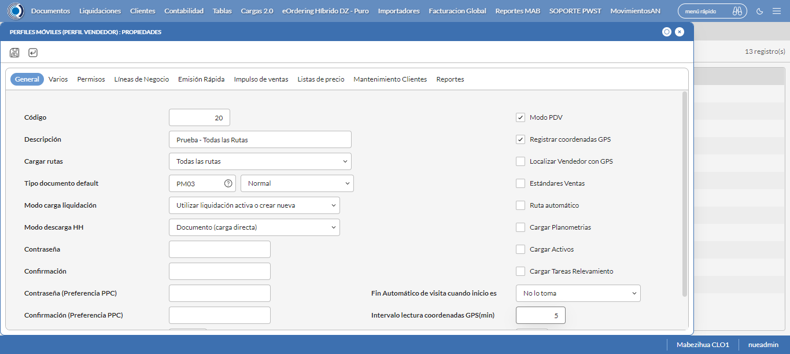

Desarrollado por : Area de Testing PWST
Fecha y hora de inicio : 2022-08-24 11:31:53
Duracion : 0:13:38.551892
Resultado : Total 8，Correctos 8 ，Taza de resultado 100.00%
Resumen 100.00% Errores 0 Fallidos 0 Correctos 8 Test realizados 8
| Caso de Prueba | Total | Correctos | Fallido | Error | Detalles | Captura del error |
| PerfilesMoviles.Test: Escenario 1 de Perfiles Moviles | 8 | 8 | 0 | 0 | Detalles | |
test |
pt1_1: 2022-08-24 11:31:55,231 - root - INFO - Se abre el chrome
2022-08-24 11:31:59,165 - root - INFO - Entra a la URL
2022-08-24 11:31:59,305 - root - INFO - Maximiza la pantalla
2022-08-24 11:32:02,365 - root - INFO - Cambia al frame
|
|
||||
test_000: Ingresa a la base de datos |
pt1_2: 2022-08-24 11:32:05,451 - root - INFO - Escribe el usuario
2022-08-24 11:32:05,561 - root - INFO - Escribe la contraseña
2022-08-24 11:32:05,702 - root - INFO - Se dio clic en el boton ingresar
2022-08-24 11:32:08,776 - root - INFO - Ejecutar Enterprise
2022-08-24 11:32:08,777 - root - INFO - Captura: C:\xampp\htdocs\versiones\automatizaciones\AutoPWST\01PM\report\img screen：20220824_11_32_08.png
2022-08-24 11:32:13,000 - root - INFO - Cambia entre pestañas
|

|
||||
test_001: Abre menu y ejecuta pantalla |
pt1_3: 2022-08-24 11:32:29,544 - root - INFO - Abre el menu completo
2022-08-24 11:32:46,495 - root - INFO - Abre la pantalla de Perfiles Moviles
2022-08-24 11:32:46,566 - root - INFO - La pantalla ejecutada es Perfiles Moviles
2022-08-24 11:32:49,573 - root - INFO - Captura: C:\xampp\htdocs\versiones\automatizaciones\AutoPWST\01PM\report\img screen：20220824_11_32_49.png
2022-08-24 11:32:49,791 - root - INFO - Se presiona el boton 'Nuevo', para crear un nuevo registro.
|

|
||||
test_002: Abre la ventana de nuevo y crear un registro |
pt1_4: 2022-08-24 11:32:54,881 - root - INFO - Se abrio la pantalla para el ingreso de un registro nuevo.
2022-08-24 11:32:54,930 - root - INFO - El campo 'Código' si se encuentra visible.
2022-08-24 11:32:54,971 - root - INFO - El campo 'Descripción' si se encuentra visible.
2022-08-24 11:32:55,018 - root - INFO - El campo 'Cargar rutas' si se encuentra visible.
2022-08-24 11:32:55,069 - root - INFO - El campo 'Tipo documento default' si se encuentra visible.
2022-08-24 11:32:55,118 - root - INFO - El campo 'Modo carga liquidación' si se encuentra visible.
2022-08-24 11:32:55,156 - root - INFO - El campo 'Modo descarga HH' si se encuentra visible.
2022-08-24 11:32:55,194 - root - INFO - El campo 'Modo PDV' si se encuentra visible.
2022-08-24 11:32:55,232 - root - INFO - El campo 'Registrar coordenadas GPS' si se encuentra visible.
2022-08-24 11:32:55,272 - root - INFO - El campo 'Fin Automático de visita cuando inicio es' si se encuentra visible.
2022-08-24 11:32:55,311 - root - INFO - El campo 'Intervalo lectura coordenadas GPS(min)' si se encuentra visible.
2022-08-24 11:32:55,392 - root - INFO - Ingresa el codigo del nuevo registro
2022-08-24 11:32:58,567 - root - INFO - Ingresa la Descripcion del nuevo registro
2022-08-24 11:33:10,049 - root - INFO - Se selecciono el registro de Cargar Rutas
2022-08-24 11:33:13,178 - root - INFO - Ingresa el Tipo documento default del nuevo registro
2022-08-24 11:33:28,283 - root - INFO - Se selecciono el registro de Tipo documento default
2022-08-24 11:33:39,803 - root - INFO - Se selecciono el registro de Modo carga liquidación
2022-08-24 11:33:51,279 - root - INFO - Se selecciono el registro de Modo descarga HH
2022-08-24 11:33:54,407 - root - INFO - Se dió click en el campo Modo PDV
2022-08-24 11:33:57,516 - root - INFO - Se dió click en el campo Registrar coordenadas GPS
2022-08-24 11:34:09,013 - root - INFO - Se selecciono el registro de Fin Automático de visita cuando inicio es
2022-08-24 11:34:12,144 - root - INFO - Ingresa el Intervalo lectura coordenadas GPS(min) del nuevo registro
2022-08-24 11:34:15,153 - root - INFO - Captura: C:\xampp\htdocs\versiones\automatizaciones\AutoPWST\01PM\report\img screen：20220824_11_34_15.png
2022-08-24 11:34:18,503 - root - INFO - Se hace el cambio de pestaña Varios para continuar con el registro nuevo
2022-08-24 11:34:23,610 - root - INFO - El campo 'Cargar resumen de cuentas únicamente del vendedor de la ruta' si se encuentra visible.
2022-08-24 11:34:23,651 - root - INFO - El campo 'Verificar límite de crédito' si se encuentra visible.
2022-08-24 11:34:23,693 - root - INFO - El campo 'Verificar opción guardar como' del tipo de documento' si se encuentra visible.
2022-08-24 11:34:23,735 - root - INFO - El campo 'Permitir pagos a cuenta en cancelaciones' si se encuentra visible.
2022-08-24 11:34:23,777 - root - INFO - El campo 'Disco de datos (WorkAbout)' si se encuentra visible.
2022-08-24 11:34:23,816 - root - INFO - El campo 'Tipo de Vendedor' si se encuentra visible.
2022-08-24 11:34:23,857 - root - INFO - El campo 'Enviar documentos de inmediato al servidor.' si se encuentra visible.
2022-08-24 11:34:23,942 - root - INFO - Se dió click en el campo Cargar resumen de cuentas únicamente del vendedor de la ruta
2022-08-24 11:34:27,073 - root - INFO - Se dió click en el campo Verificar límite de crédito
2022-08-24 11:34:30,189 - root - INFO - Se dió click en el campo Verificar opción 'guardar como' del tipo de documento
2022-08-24 11:34:33,310 - root - INFO - Se dió click en el campo Permitir Pagos
2022-08-24 11:34:54,971 - root - INFO - Se selecciono el registro de Disco de Datos
2022-08-24 11:35:06,447 - root - INFO - Se selecciono el registro de Tipo de Vendedor
2022-08-24 11:35:09,577 - root - INFO - Se dió click en el campo Enviar documentos de inmediato al servidor.
2022-08-24 11:35:12,700 - root - INFO - Se hace el cambio de pestaña Permisos para continuar con el registro nuevo
2022-08-24 11:35:17,845 - root - INFO - Se presiona el boton 'Nuevo de la pestaña Permiso' , para crear un nuevo registro.
2022-08-24 11:35:22,937 - root - INFO - El campo 'Permisos' si se encuentra visible.
2022-08-24 11:35:31,368 - root - INFO - Se selecciono el registro de Permisos
2022-08-24 11:35:34,480 - root - INFO - Se presiona el boton 'Guardar de la pestaña Permiso', para guardar el registro.
2022-08-24 11:35:39,608 - root - INFO - Se hace el cambio de pestaña Lineas de Negocio para continuar con el registro nuevo
2022-08-24 11:35:44,722 - root - INFO - Se presiona el boton 'Nuevo de la pestaña Permiso' , para crear un nuevo registro.
2022-08-24 11:35:49,803 - root - INFO - El campo 'Línea negocio' si se encuentra visible.
2022-08-24 11:35:58,280 - root - INFO - Se selecciono el registro de Linea de negocio
2022-08-24 11:36:01,401 - root - INFO - Se presiona el boton 'Guardar de la pestaña Linea de Negocio', para guardar el registro.
2022-08-24 11:36:06,527 - root - INFO - Se presiona el boton 'Nuevo de la pestaña Permiso' , para crear un nuevo registro.
2022-08-24 11:36:20,063 - root - INFO - Se selecciono el registro de Linea de negocio
2022-08-24 11:36:23,216 - root - INFO - Se presiona el boton 'Guardar de la pestaña Linea de Negocio', para guardar el registro.
2022-08-24 11:36:28,324 - root - INFO - Se presiona el boton 'Nuevo de la pestaña Permiso' , para crear un nuevo registro.
2022-08-24 11:36:41,808 - root - INFO - Se selecciono el registro de Linea de negocio
2022-08-24 11:36:44,887 - root - INFO - Se presiona el boton 'Guardar de la pestaña Linea de Negocio', para guardar el registro.
2022-08-24 11:36:50,036 - root - INFO - Se hace el cambio de pestaña Impulso Ventas para continuar con el registro nuevo
2022-08-24 11:36:55,148 - root - INFO - Se presiona el boton 'Nuevo de la pestaña Impulso de Ventas' , para crear un nuevo registro.
2022-08-24 11:37:00,274 - root - INFO - El campo 'Artículo' si se encuentra visible.
2022-08-24 11:37:00,371 - root - INFO - Ingresa el Articulo del nuevo registro
2022-08-24 11:37:06,603 - root - INFO - Se presiona el boton 'Guardar de la pestaña Impulso de Ventas', para guardar el registro.
2022-08-24 11:37:11,714 - root - INFO - Se presiona el boton 'Nuevo de la pestaña Impulso de Ventas' , para crear un nuevo registro.
2022-08-24 11:37:16,840 - root - INFO - Ingresa el Articulo del nuevo registro
2022-08-24 11:37:23,076 - root - INFO - Se presiona el boton 'Guardar de la pestaña Impulso de Ventas', para guardar el registro.
2022-08-24 11:37:28,195 - root - INFO - Se presiona el boton 'Nuevo de la pestaña Impulso de Ventas' , para crear un nuevo registro.
2022-08-24 11:37:33,318 - root - INFO - Ingresa el Articulo del nuevo registro
2022-08-24 11:37:39,551 - root - INFO - Se presiona el boton 'Guardar de la pestaña Impulso de Ventas', para guardar el registro.
2022-08-24 11:37:44,660 - root - INFO - Se presiona el boton 'Nuevo de la pestaña Impulso de Ventas' , para crear un nuevo registro.
2022-08-24 11:37:49,788 - root - INFO - Ingresa el Articulo del nuevo registro
2022-08-24 11:37:56,028 - root - INFO - Se presiona el boton 'Guardar de la pestaña Impulso de Ventas', para guardar el registro.
2022-08-24 11:38:01,149 - root - INFO - Se presiona el boton 'Nuevo de la pestaña Impulso de Ventas' , para crear un nuevo registro.
2022-08-24 11:38:06,264 - root - INFO - Ingresa el Articulo del nuevo registro
2022-08-24 11:38:12,534 - root - INFO - Se presiona el boton 'Guardar de la pestaña Impulso de Ventas', para guardar el registro.
2022-08-24 11:38:17,653 - root - INFO - Se hace el cambio de pestaña Mantenimiento Clientes para continuar con el registro nuevo
2022-08-24 11:38:22,747 - root - INFO - El campo 'Permiso agregar nuevos clientes' si se encuentra visible.
2022-08-24 11:38:22,795 - root - INFO - El campo 'Permiso modificar clientes existentes' si se encuentra visible.
2022-08-24 11:38:22,842 - root - INFO - El campo 'Ruta referencia' si se encuentra visible.
2022-08-24 11:38:22,925 - root - INFO - Se dió click en el campo Permiso agregar nuevos clientes
2022-08-24 11:38:26,049 - root - INFO - Se dió click en el campo Permiso modificar clientes existentes
2022-08-24 11:38:37,592 - root - INFO - Se selecciono el registro de Ruta Referencia
2022-08-24 11:38:40,757 - root - INFO - Se dió click en el campo Clasificación 1
2022-08-24 11:38:43,943 - root - INFO - Se dió click en el campo Clasificación 2
2022-08-24 11:38:47,084 - root - INFO - Se dió click en el campo Clasificación 3
2022-08-24 11:38:50,234 - root - INFO - Se dió click en el campo Colonia
2022-08-24 11:38:53,415 - root - INFO - Se dió click en el campo Codigo Postal
2022-08-24 11:38:56,576 - root - INFO - Se dió click en el campo Direccion
2022-08-24 11:38:59,758 - root - INFO - Se dió click en el campo Entorno PDV
2022-08-24 11:39:02,928 - root - INFO - Se dió click en el campo Esquina 1
2022-08-24 11:39:06,059 - root - INFO - Se dió click en el campo Esquina 2
2022-08-24 11:39:09,226 - root - INFO - Se dió click en el campo Paises
2022-08-24 11:39:12,377 - root - INFO - Se dió click en el campo Departamento
2022-08-24 11:39:15,515 - root - INFO - Se dió click en el campo Localidad
2022-08-24 11:39:18,680 - root - INFO - Se da clic en el boton Guardar; se debe crear un nuevo registro.
|
 | ||||
test_003: Repite el Registro |
pt1_5: 2022-08-24 11:39:23,809 - root - INFO - Se presiona el boton 'Refrescar', para crear un nuevo registro igual al anterior.
2022-08-24 11:39:28,930 - root - INFO - Se presiona el boton 'Nuevo', para crear un nuevo registro igual al anterior.
2022-08-24 11:39:37,020 - root - INFO - Se abrio la pantalla para el ingreso de un registro nuevo.
2022-08-24 11:39:37,093 - root - INFO - Ingresa el codigo del nuevo registro
2022-08-24 11:39:40,286 - root - INFO - Ingresa la Descripcion del nuevo registro
2022-08-24 11:39:51,766 - root - INFO - Se selecciono el registro de Cargar Rutas
2022-08-24 11:39:54,904 - root - INFO - Ingresa el Tipo documento default del nuevo registro
2022-08-24 11:40:09,998 - root - INFO - Se selecciono el registro de Tipo documento default
2022-08-24 11:40:21,485 - root - INFO - Se selecciono el registro de Modo carga liquidación
2022-08-24 11:40:32,980 - root - INFO - Se selecciono el registro de Modo descarga HH
2022-08-24 11:40:36,129 - root - INFO - Se dió click en el campo Modo PDV
2022-08-24 11:40:39,264 - root - INFO - Se dió click en el campo Registrar coordenadas GPS
2022-08-24 11:40:50,762 - root - INFO - Se selecciono el registro de Fin Automático de visita cuando inicio es
2022-08-24 11:40:53,900 - root - INFO - Ingresa el Intervalo lectura coordenadas GPS(min) del nuevo registro
2022-08-24 11:41:00,032 - root - INFO - Se da clic en el boton Guardar; se debe crear un nuevo registro.
2022-08-24 11:41:07,088 - root - INFO - Captura: C:\xampp\htdocs\versiones\automatizaciones\AutoPWST\01PM\report\img screen：20220824_11_41_07.png
2022-08-24 11:41:07,653 - root - INFO - Se presiona el boton 'Cerrar', para cerrar el mensaje de duplicidad de llave primaria
2022-08-24 11:41:12,790 - root - INFO - Se presiona el boton 'Cerrar', para cerrar la ventana
|
|||||
test_004: Modificar el registro |
pt1_6: 2022-08-24 11:41:21,916 - root - INFO - Se presiona el boton 'Refrescar', para crear un nuevo registro igual al anterior.
2022-08-24 11:41:26,551 - root - INFO - Se da clic en el registro creado, para proceder a modificarlo.
2022-08-24 11:41:31,762 - root - INFO - Ingresa la Descripcion del nuevo registro
2022-08-24 11:41:43,215 - root - INFO - Se selecciono el registro de Cargar Rutas
2022-08-24 11:41:46,216 - root - INFO - Captura: C:\xampp\htdocs\versiones\automatizaciones\AutoPWST\01PM\report\img screen：20220824_11_41_46.png
2022-08-24 11:41:46,490 - root - INFO - Se hace el cambio de pestaña Permisos para continuar con el registro nuevo
2022-08-24 11:41:51,706 - root - INFO - Se presiona el boton 'Nuevo de la pestaña Permiso' , para crear un nuevo registro.
2022-08-24 11:42:05,223 - root - INFO - Se selecciono el registro de Permisos
2022-08-24 11:42:08,373 - root - INFO - Se presiona el boton 'Guardar de la pestaña Permiso', para guardar el registro.
2022-08-24 11:42:13,509 - root - INFO - Se hace el cambio de pestaña Lineas de Negocio para continuar con el registro nuevo
2022-08-24 11:42:18,646 - root - INFO - Se hace el cambio de pestaña Impulso Ventas para continuar con el registro nuevo
2022-08-24 11:42:28,259 - root - INFO - Se da clic en el registro creado, para proceder a modificarlo.
2022-08-24 11:42:36,414 - root - INFO - Se presiona el boton 'Eliminar de Impulso Ventas', para eliminar el registro.
2022-08-24 11:42:41,025 - root - INFO - Se da clic en el registro creado, para proceder a modificarlo.
2022-08-24 11:42:49,218 - root - INFO - Se presiona el boton 'Eliminar de Impulso Ventas', para eliminar el registro.
2022-08-24 11:42:53,828 - root - INFO - Se da clic en el registro creado, para proceder a modificarlo.
2022-08-24 11:43:01,956 - root - INFO - Se presiona el boton 'Eliminar de Impulso Ventas', para eliminar el registro.
2022-08-24 11:43:06,571 - root - INFO - Se da clic en el registro creado, para proceder a modificarlo.
2022-08-24 11:43:14,696 - root - INFO - Se presiona el boton 'Eliminar de Impulso Ventas', para eliminar el registro.
2022-08-24 11:43:19,304 - root - INFO - Se da clic en el registro creado, para proceder a modificarlo.
2022-08-24 11:43:27,467 - root - INFO - Se presiona el boton 'Eliminar de Impulso Ventas', para eliminar el registro.
2022-08-24 11:43:27,578 - root - INFO - Se da clic en el boton Guardar; se debe modificar la informacion del registro.
|
|||||
test_005: Eliminar el registro creado |
pt1_7: 2022-08-24 11:43:32,697 - root - INFO - Se presiona el boton 'Refrescar', para proceder a eliminar el registro.
2022-08-24 11:43:42,335 - root - INFO - Se da clic en el registro creado, para proceder a eliminarlo.
2022-08-24 11:43:45,489 - root - INFO - Se hace el cambio de pestaña Permisos para continuar con el registro nuevo
2022-08-24 11:43:55,119 - root - INFO - Se da clic en el registro creado, para proceder a modificarlo.
2022-08-24 11:44:03,256 - root - INFO - Se presiona el boton 'Eliminar de Permiso', para eliminar el registro.
2022-08-24 11:44:07,863 - root - INFO - Se da clic en el registro creado, para proceder a Eliminarlo.
2022-08-24 11:44:16,003 - root - INFO - Se presiona el boton 'Eliminar de Permiso', para eliminar el registro.
2022-08-24 11:44:16,135 - root - INFO - Se hace el cambio de pestaña Lineas de Negocio para continuar con el registro nuevo
2022-08-24 11:44:25,763 - root - INFO - Se da clic en el registro creado, para proceder a Eliminarlo.
2022-08-24 11:44:33,917 - root - INFO - Se presiona el boton 'Eliminar de Linea de Negocio', para eliminar el registro.
2022-08-24 11:44:38,543 - root - INFO - Se da clic en el registro creado, para proceder a Eliminarlo.
2022-08-24 11:44:46,703 - root - INFO - Se presiona el boton 'Eliminar de Linea de Negocio', para eliminar el registro.
2022-08-24 11:44:51,315 - root - INFO - Se da clic en el registro creado, para proceder a Eliminarlo.
2022-08-24 11:44:59,461 - root - INFO - Se presiona el boton 'Eliminar de Linea de Negocio', para eliminar el registro.
2022-08-24 11:44:59,561 - root - INFO - Se da clic en el boton Guardar; se debe modificar la informacion del registro.
2022-08-24 11:45:09,176 - root - INFO - Se da clic en el registro creado, para proceder a eliminarlo.
2022-08-24 11:45:17,316 - root - INFO - Se presiona el boton 'Eliminar', para eliminar el registro.
2022-08-24 11:45:17,318 - root - INFO - Captura: C:\xampp\htdocs\versiones\automatizaciones\AutoPWST\01PM\report\img screen：20220824_11_45_17.png
2022-08-24 11:45:17,543 - root - INFO - Se confirma el eliminado del registro
2022-08-24 11:45:22,658 - root - INFO - Se presiona el boton 'Refrescar', para crear un nuevo registro igual al anterior.
2022-08-24 11:45:27,779 - root - INFO - Se presiona el boton 'Cerrar', para cerrar la pantalla de Categorias Fiscales.
|
|||||
test_006: Cerrar_Navegador |
pt1_8: 2022-08-24 11:45:32,095 - root - INFO - Se cierra chrome
|
|
||||
| Caso de prueba | 8 | 8 | 0 | 0 | Taza de resultado：100.00% | |